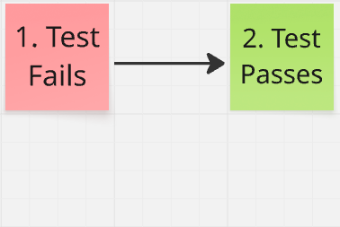

Test-Driven Development
Code quality is one of the biggest factors contributing to effective software delivery. High quality code is important because it allows engineers to ship new features quicker and more confidently. I have found no technique with a higher impact on software quality than Test-Driven Development, or TDD.
I'm a huge fan of TDD so just know you will see a very biased argument in favor of TDD here. Arguments against TDD can easily be found with a quick Google search! But to me the benefits of TDD are clear. TDD is simply a really good way to maintain high quality.
What is it?
TDD is a 3-step software development practice. A simple way to remember the 3 steps is "Red-Green-Refactor".
First, a developer creates a new automated test that describes some expected behavior of the code. Behaviors are just the various ways your software behaves given different inputs.
Here's an example of an expected behavior: "When the user types an invalid character in the field, it should indicate an error by applying a red outline".
At this point, the developer runs the test. However, the expected behavior doesn't exist, so the test will fail. In TDD a failing tests is often called a "red" test.

After seeing the test fail as expected, the developer writes some code to implement the function, for example adding an error state to a text field.
Then the developer runs the test again to verify it passes. A passing test is often called "green".

Finally, when every automated test passes, there is an opportunity to refactor the code. Some common ways to refactor the code include replacing duplicated code with a function call, or renaming a variable to be more descriptive.

After the developer has (optionally) refactored the code, it is time to work on the next incremental feature by writing a new test.

As you can see, each of the 3 steps follows one of the others, forming a cycle. When developing an application, applying TDD means to repeat the cycle over and over and over again.
Red-Green-Refactor.
Why Test?
The purpose of TDD is to ensure that test coverage remains as high as possible. But test coverage isn't just a metric for its own sake. Let’s step back and ask: why is test coverage important?
What really matters at the end of the day is good software. In other words, the app should work! To make sure it works, we test it out.
A long time ago, the lifecycle of a software project generally resembled this diagram. A team would build a piece of software, test it out, then ship it.

Unfortunately, modern software delivery is not so simple!
The reality for nearly all software is that it's never done; it is always being tweaked and improved. Development is an iterative process. Top software companies like Amazon and Google push new updates to their flagship products daily or even multiple times a day. There is a term for this: Continuous Delivery.

When developing iteratively, tension is created. We want frequent changes to the code, and we want to deliver quickly, but we also want the app to work. Some teams accept the risk of breaking things, and simply don't test. Other teams pay some slow, error-prone humans to test each version of the app before it gets shipped. The third option is comprehensive automated tests. If the goal is delivering quickly and confidently, the best way to achieve this is with automated test coverage.
Invest in Tests
One argument against TDD is that writing automated tests takes too long, or it is too hard. I won't argue that it takes time and can be difficult, especially at first. But the other side of the equation deserves exploring. When we invest in tests, what do we get for our efforts?
First, as I mentioned earlier, your automated tests replace testing by hand. In many cases manual testing can be eliminated by comprehensive tests. That's probably reason enough to write automated tests.
Another major return on investment comes in the form of developer confidence. This is somewhat hard to convey if you haven't experienced it, but it's undeniable for many who have first-hand experience on well-tested codebases. In short, having tests gives you freedom to refactor the code. A great deep dive on this subject is Matthew Parker's Why TDD.
Test First
One of the biggest arguments against TDD is that the whole idea of writing the test first is unnecessary. But to me, when I think about what makes a test good, the idea of writing them first naturally follows.
The main thing a good test should do is pass when things work as expected, and fail when they don't work as expected. It sounds obvious but it's worth saying. As the author of a good test, a developer needs to verify both of these scenarios. In other words, they must try the test on 2 different versions of the code and see that the test passes under the expected condition, and fails under incorrect conditions.
I want to emphasize this point: if a test has never failed, it's not a good test. I have encountered many tests that look correct at first glance but never fail due to some bug in the test.
So a test should fail. The only remaining question is, at what point in development should the test fail?
- The test fails first. Congratulations, you're doing TDD!
- The implementation comes first, then a test which passes. Then at the end, the implementation is temporarily removed to verify the test will fail. This is still effective, but it does add an extra step.
For me, the choice is clear. Only writing the test first gives me the confidence I need while avoiding extra work. That's why I TDD!
Learn More About TDD
Let's chat about TDD or discuss how adopting TDD could improve outcomes for your team!